迭代纵深：三版本需求层层解构细化
工业场景切忌闭门造车。本次交付采用渐进细化策略，将庞大复杂的整条重工业流水线逐步收敛至可量化、可单体下钻的控制面板。
| 版本 | 聚焦核心 | 核心变化与下钻深度 |
|---|---|---|
| V1.0 | 产线流程可视化 | 明确牵引、收卷、横拉、纵拉、挤出全局物理拓扑图，划定 6 大核心功能功能模块入口。 |
| V2.0 | 单设备深度监控 | 细化原料处理机（掺料桶/投料桶重量、输出量、供给配比）及挤出机（电机转速、电流、主压力）设备级看板。 |
| V3.0 | 多维度数据分析 | 引入 A/B 组 18 段筒体高精加热矩阵控制，并增设挤筒报警日/月日历热点、趋势分布图表。 |


核心界面矩阵：全流程多维度深度监控面板
原料处理：高密度网格与单桶卡片汇总
原料车间涉及复杂的掺料、投料逻辑。界面左、右两侧对置布置掺料单桶与投料单桶参数看板（实时重量、输送速率、供给供给能力占比）；底部卡片矩阵输出多桶合并后的汇总供给数据，保障数据流逻辑绝对自洽。
• 掺料单桶供给能力占比：95.1 %
• 投料单桶质量混合占比：100 %
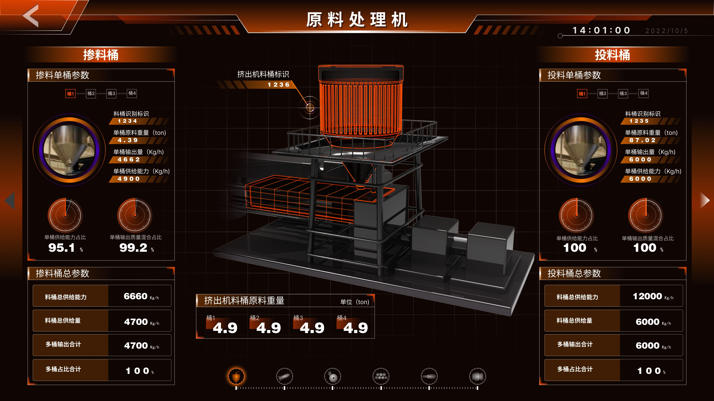
[原料处理系统]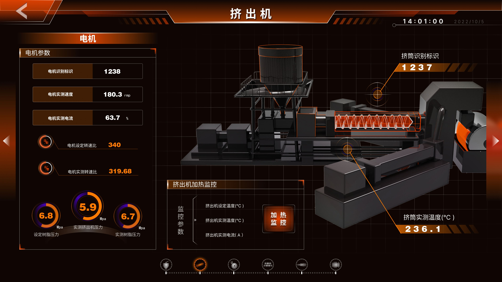
[挤出机系统]挤出机控制：三维剖切与电机参数闭环
挤出机是拉膜产线的核心。设计上通过中央3D模型局部1/4透视剖切，将内部旋转螺杆物理实景化显现。左侧高亮映射电机实测转速（180.3 rmp）、设定转速比、树脂主压力与熔体实测温度，大幅降低巡检视差。
"3D视角的建立，是为了让工程师在控制台即可直观捕捉机械运动状态，而非仅看死板数字。"
V3.0 增补专精模块：高精多段加热控制与智能报警热点
针对拉膜中极其严苛的控温与安全管理，在 V3.0 需求演进中专门设计了矩阵化加热监控区与月均报警雷达分布热点。
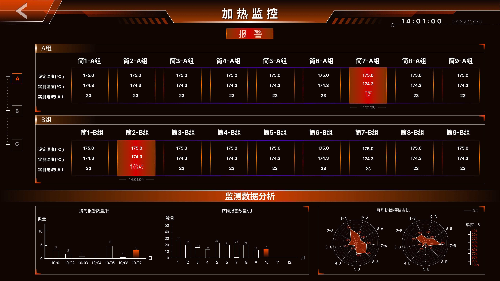
[高精加热矩阵与分析]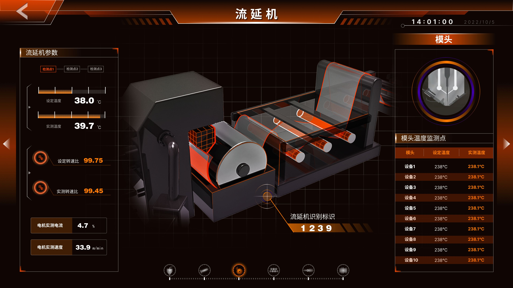
细化流延段物理建模，精准罗列模头 1 至 10 号测温节点的设定温度与实测温度矩阵，预防薄膜薄厚不均。
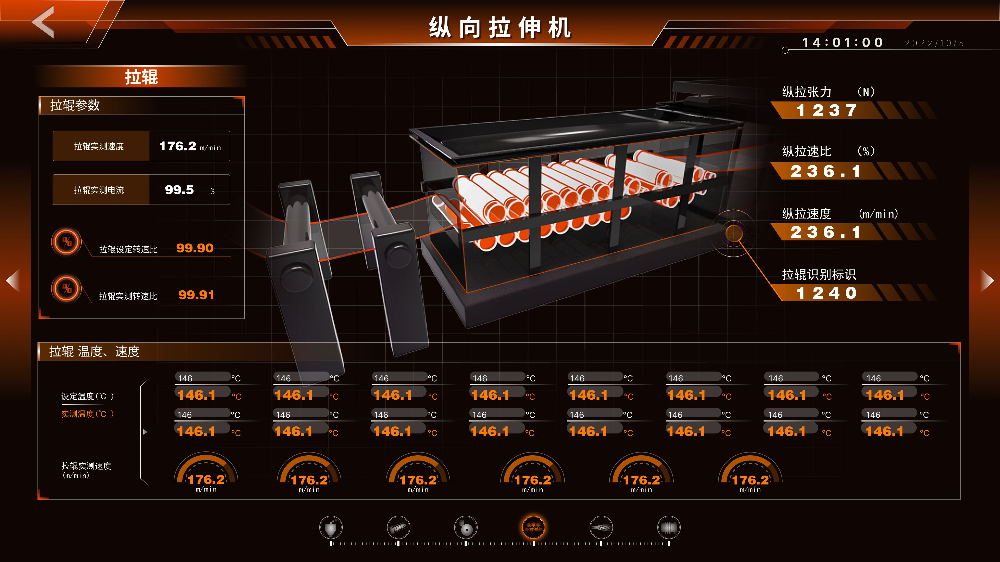
全量映射拉辊实测速度、拉伸张力（1237 N）、纵拉速比等关键高阶力学参数，底部并联拉辊热温矩阵仪表盘。
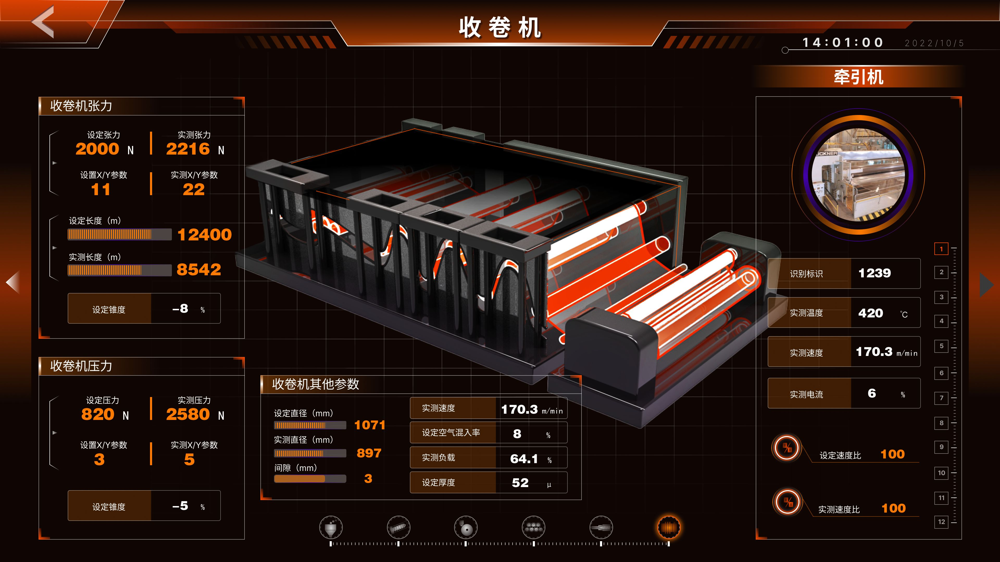
收卷机是产线末端核心设备，实时监控收卷张力、速度匹配、膜卷直径与表面质量，确保成品薄膜的收卷整齐度与质量稳定性。
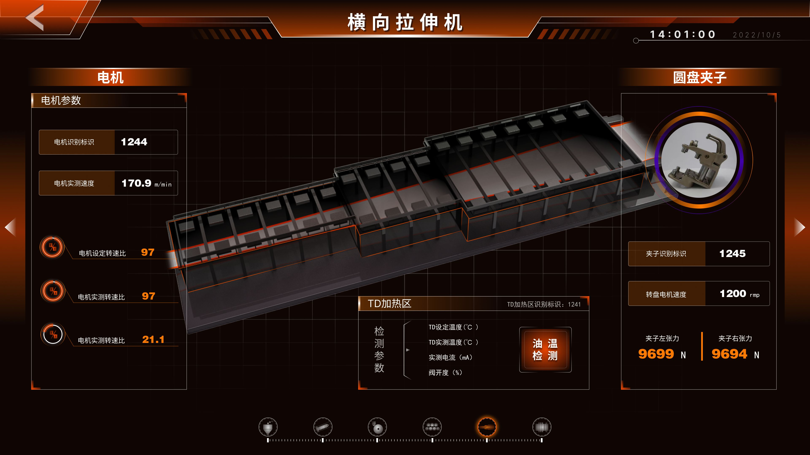
[横向拉伸机]横向拉伸机：圆盘夹子张力平衡
展示横拉机整体及核心动作组件"圆盘夹子"局部高保真渲染，映射左右两侧夹子左/右张力数值（9699 N / 9694 N），确保薄膜横向拉伸均匀。
横加 L/R 区油温对置检测
完美复刻横加机界面中两组每边 9 段筒体的设定/实测对比。异常段筒（如横加 2L 阀门开度 100% 出现红色过热警示）强亮爆闪。
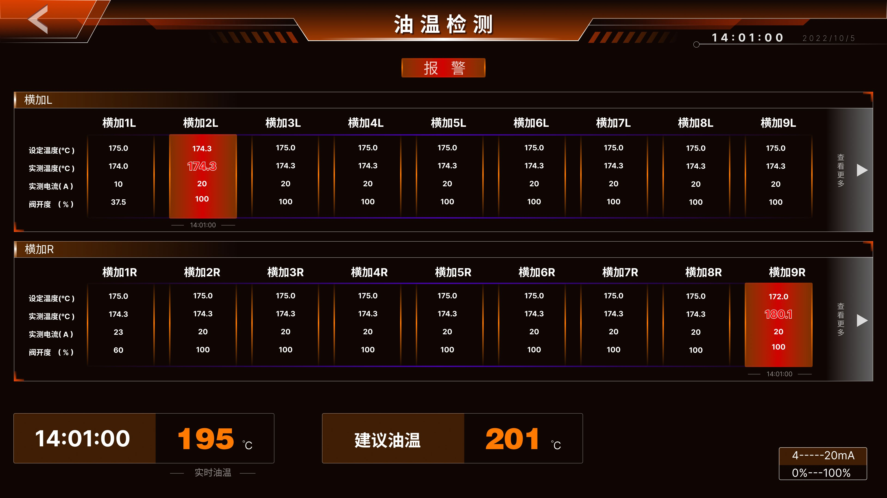
[油温对置检测]挤出机加热监控系统（移动端）
针对移动端触控场景优化的挤出机A/B组多段加热监控界面，实时展示设定温度与实测温度对比，支持异常报警定位。
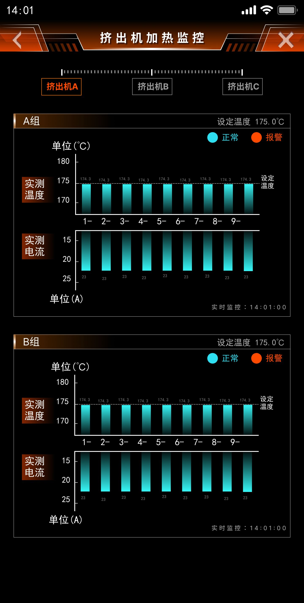
[A组加热矩阵]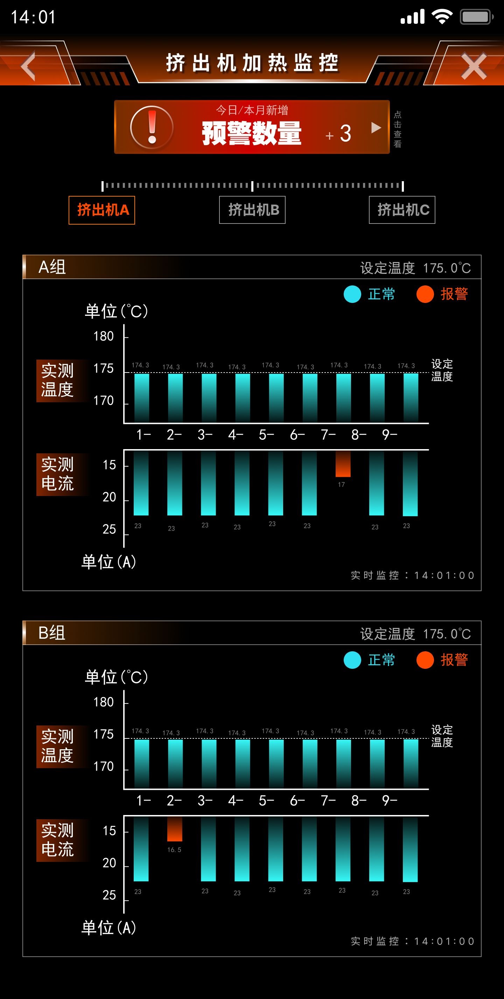
[B组加热矩阵]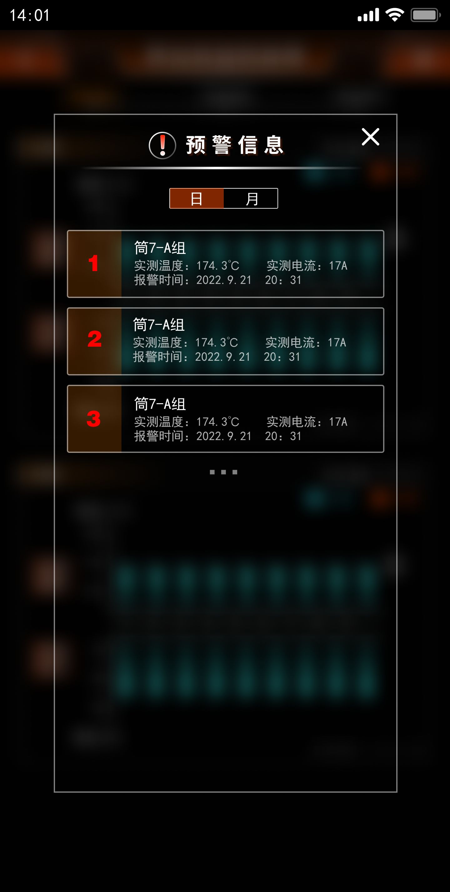
[报警雷达分布]轻量低多边形 3D 模型资产与动画预演
为了平衡生产线大规模复杂模型在前端网页端渲染性能（Performance），所有的三维资产全部进行了低模（Low-Poly）工艺重构。
■ 边缘呼吸光效：设备平稳运行状态时轮廓缓动呼吸，异常突发红色频闪。
■ 粒子路径动效：高亮流线精确映射原料从掺料桶→投料桶→挤出机的三维流向。
■ 引力聚焦机制：点击 6 大功能模块入口，主 3D 摄像机镜头视角平滑自动聚焦至特定单体设备。
核心设计成果归档
信息完整性与界面可读性的永恒博弈： 工业 HMI 看板绝非炫技的画布。面对海量的加热段电流、压力曲线，我们推行"重点参数全局外露，极高频分析下钻隐藏"的视线流策略。低模+环境发光的渲染理念，已被证明在保障 Web 性能的同时，能够完美传递未来的科技秩序感。